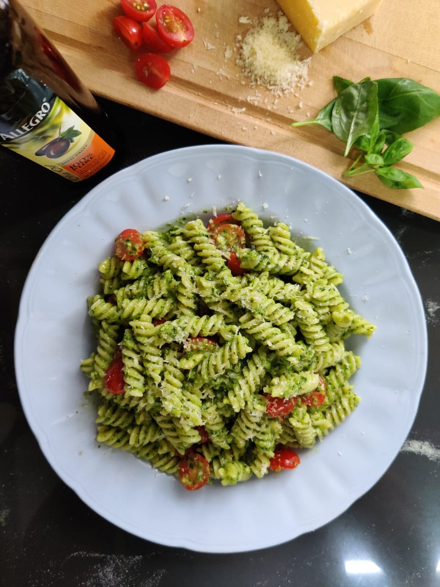

Originating from Genoa, Pesto is derrived from the Italian phrase "to pound", where several ingredients are crushed in a mortar and pestle to create a green luscious sauce in the process.
Pesto lends its bright colors from freshly harvested basil leaves. Combined with garlic and pine nuts, this raw cohesion works universally well with almost any form of pasta.